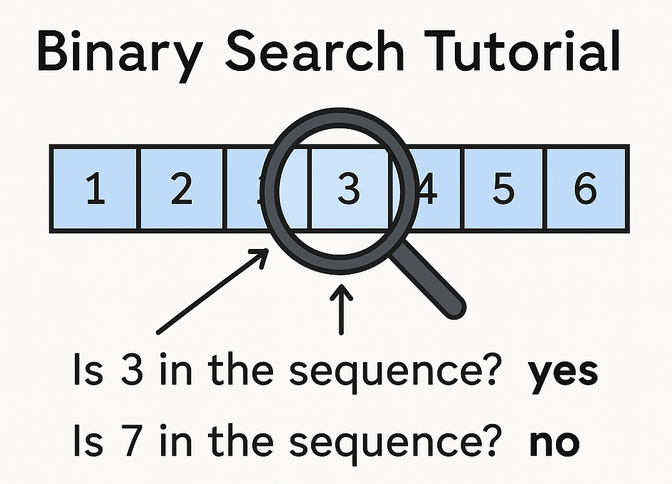

Given an ordered sequence, you want to know if several other numbers belong to it.
The first line of input has one integer n (1 ≤ n ≤ 200'000), corresponding to the length of the ordered sequence.
The second line of input has one line with n integers, separated by spaces, ordered from smallest to largest
(every integer will be at least 1 and at most 1'000'000'000)
The third line of input has one integer m (1 ≤ m ≤ 200'000), corresponding to the quantity of numbers you want to know
The fourth line of input has one line with m integers, separated by spaces, each at least 1 and at most 1'000'000'000.
Print one line with m strings, yes if the corresponding value belongs to the sequence,
no if the corresponding value does not belong to the sequence
Input
3 2 2 5 3 5 5 2
Output
yes yes yes
Input
5 1 2 2 3 6 5 5 2 10 7 9
Output
no yes no no no